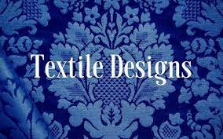
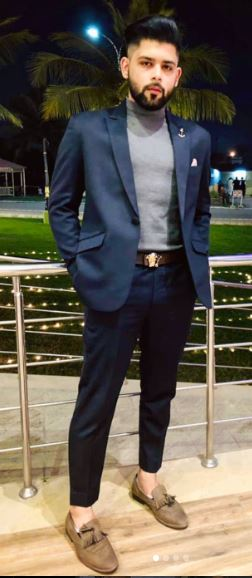

- About us:
Welcome to Amhut, where the art of weaving meets the world of imagination. We are passionate about textiles, and our mission is to bring you the finest fabrics, inspired designs, and unrivaled quality.
- Our Story
Founded in 2023, Amhut has evolved from a humble textile workshop into a global leader in the textile industry. Our journey started with a vision of creating textiles that are not just a medium of comfort but a canvas of creativity. Over the years, we have painstakingly woven this vision into every thread, transforming it into reality.
- Craftsmanship and Quality
At Amhut, we are committed to excellence. Our artisans, some of whom have been honing their skills for generations, meticulously craft each piece with an eye for detail and a passion for perfection. We believe in the value of traditional craftsmanship and combine it with modern innovation to offer you textiles that are not just beautiful but also durable.
- Innovation and Design
We understand that textiles are an integral part of your life, adding color, warmth, and personality to your space. That's why we continually explore the latest design trends, materials, and techniques to create textiles that inspire. Whether you are looking for timeless classics, contemporary elegance, or something uniquely your own, we have a wide range of designs and patterns to suit your style.
- Sustainability
As stewards of the environment, we take sustainability seriously. We are dedicated to reducing our ecological footprint by sourcing materials responsibly, implementing eco-friendly production practices, and promoting ethical manufacturing. We are proud to offer a growing collection of eco-conscious textiles that are as kind to the planet as they are beautiful.
- Your Vision, Our Fabric
At Amhut, we understand that your vision is as unique as you are. Our customization options allow you to bring your ideas to life. From choosing the perfect fabric to designing patterns or prints, we are here to make your dreams a reality. Your imagination is the only limit.
- Customer-Centric Approach
We are passionate about textiles, but we are even more passionate about serving our customers. Our dedicated customer support team is here to assist you at every step of your textile journey, from selecting the right fabric to ensuring your complete satisfaction.
- Join the Amhut Family
We invite you to explore our website and discover the world of possibilities that await you in our textiles. Whether you are a homeowner, interior designer, or a fellow textile enthusiast, we are excited to welcome you to our community. Thank you for choosing Amhut for your textile needs. We look forward to being a part of your fabric story.
Chief Exective Officer

Hamza Rasheed Awan